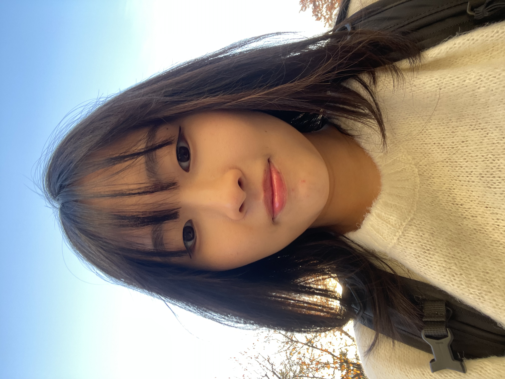

|
Sooran Kim I am an undergraduate student at Yonsei University, double majoring in Psychology and Computer Science. My interest in AI, especially in computer vision, began during a cognitive psychology course. I found it fascinating that the way the human visual system perceives objects was similar to how Convolutional Neural Networks (CNNs) process visual information. This realization sparked my curiosity about AI and led me to explore the field of computer vision, eventually deciding to pursue a second major in Computer Science. |
 |
{kind=link}
Research InterestsI focus on bridging cognitive psychology and computer vision, exploring how brain-inspired principles can inform AI systems. My work aims to enhance our understanding of both autonomous systems and human cognition through the study of complex visual reasoning. |
Education |
 |
Yonsei University, Seoul Korea
Mar 2022 - Expected Feb 2026 B.A. in Psychology & B.S. in Computer ScienceAdvanced Major in Psychology and AI Convergence GPA: 4.14/4.3 |
Experience |
 |
VCC Lab, Yonsei University
Undergraduate Research Assistant (Advisor: Sang Chul Chong) | Sept 2024 - Present
|
|
YAI, Yonsei Artificial Intelligence Club
Club Member | Jul 2024 - Present
|
|
|
Yonsei Tutoring Program
Tutor | Mar 2024 - Jun 2024
|
|
|
Dongnyeok Community Children’s Center
Mentor & Instructor | Mar 2022 - Dec 2023
|
Project |
|
Fine-tuning Detectron2 for Face Mosaic
Aug 2024 As part of a toy project in the YAI, I worked with a team of four to develop a simple face mosaic tool using Detectron2. Two team members were responsible for downloading datasets and implementing the data loader. My role focused on fine-tuning the Detectron2 model using a GPU server, ensuring accurate face detection. Another teammate handled the implementation of the mosaic effect. This project gave us the opportunity to explore practical applications of computer vision techniques in a collaborative setting. You can check out the project on GitHub. Below is a simple inference result: |
Talks |
 |
Vision Transformer Presentation at YAI
Date: Aug 14, 2024 Delivered a presentation on Vision Transformer (ViT) at YAI, providing a detailed explanation of the background, architecture, and performance of ViT, making the topic approachable for audiences with little prior knowledge. The presentation was based on the paper "An Image is Worth 16x16 Words: Transformers for Image Recognition at Scale".You can check out the presentation slides (PDF) here. |
 |
Amodal Completion Presentation at YAI
Date: Sept 11, 2024 Delivered a presentation on the new amodal completion paradigm proposed in the paper "Amodal Completion via Progressive Mixed Context Diffusion", with a focus on its application to amodal completion tasks.You can check out the presentation slides (PDF) here. |
Honors and Awards |
|
Honor, Yonsei University
Aug 2022 Awarded to students in the top 10% based on GPA. |
|
Veritas Scholarship, Yonsei University
Fall 2024, Spring 2023, Fall 2022 Granted for academic excellence, based on GPA and credit completion. |
Things I Love |

|
Exercise
I enjoy climbing, Pilates, and working out at the gym. Staying active helps me stay focused and energized throughout the day. |

|
Films
I'm a huge fan of Bong Joon-ho, and *Parasite* is my all-time favorite movie. I watched it three times in theaters and countless more times on Netflix—I've seen it so many times that I can recite the lines by heart. |

|
Sitcoms
I'm a big fan of *Friends*, and my favorite character is Ross Geller. I also really enjoy watching Korean sitcoms like the High Kick series, Potato Star, and 똑바로 살아라. |
|
Website template from Jon Barron. |